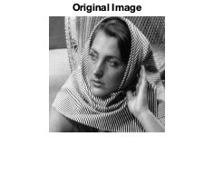
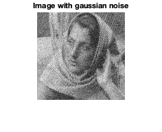
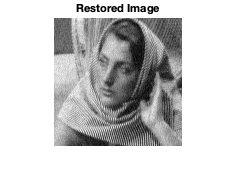
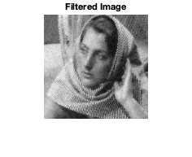
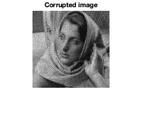
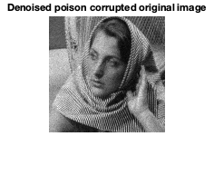
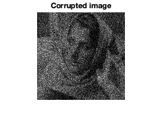
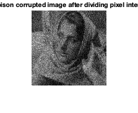

Contents
Loading and displaying the original image
im = double(imread('../data/barbara256.png'));
imshow(mat2gray(im));
title('Original Image');

Adding noise and displaying the noisy image
im1 = im + randn(size(im))*20;
figure;
imshow(mat2gray(im1));
title('Image with gaussian noise');

Part (a): PCA Denoising
tic;
im2 = myPCADenoising1(im1,7,20);
figure;
imshow(mat2gray(im2));
title('Restored Image');
fprintf('RMSE = %f\n', rmse(im,im2));
toc;
RMSE = 0.071540
Elapsed time is 0.706667 seconds.

Part (b): PCA Dnoising with only K nearest neighbouring patches
tic;
im2 = myPCADenoising2(im1,7,20,200,31);
figure;
imshow(mat2gray(im2));
title('Restored Image');
fprintf('RMSE = %f\n', rmse(im,im2));
toc;
RMSE = 0.056009
Elapsed time is 70.319973 seconds.

Part (c): Denoising using Bilateral filtering
tic;
im2 = myBilateralFiltering(im1,1.7,40.5,9);
figure;
imshow(mat2gray(im2));
title('Filtered Image');
fprintf('RMSE = %f\n', rmse(im,im2));
toc;
RMSE = 0.084374
Elapsed time is 0.453655 seconds.

Comparing PCA denoising and bilateral filtering
Part (d): Denoising Poisson-corrupted image (original image)
im1 = poissrnd(im);
figure;
imshow(mat2gray(im1));
title('Corrupted image');
tic;
im1_sqrt = sqrt(im1);
im2_sqrt = myPCADenoising2(im1_sqrt, 7, 0.25, 200, 31);
im2 = im2_sqrt.^2;
figure;
imshow(mat2gray(im2));
title('Denoised poison corrupted original image')
fprintf('RMSE = %f\n', rmse(im,im2));
toc;
RMSE = 0.064873
Elapsed time is 72.155686 seconds.
 
Part (d): Denoising Poisson-corrupted image (corruption after dividing pixel intensities by 20)
im1 = poissrnd(im/20);
figure;
imshow(mat2gray(im1));
title('Corrupted image');
tic;
im1_sqrt = sqrt(im1);
im2_sqrt = myPCADenoising2(im1_sqrt, 7, 0.25, 200, 31);
im2 = im2_sqrt.^2;
figure;
imshow(mat2gray(im2));
title('Denoised poison corrupted image after dividing pixel intensities by 20')
fprintf('RMSE = %f\n', rmse(im,im2));
toc;
RMSE = 0.951293
Elapsed time is 71.851680 seconds.
 
Comparing results in both cases